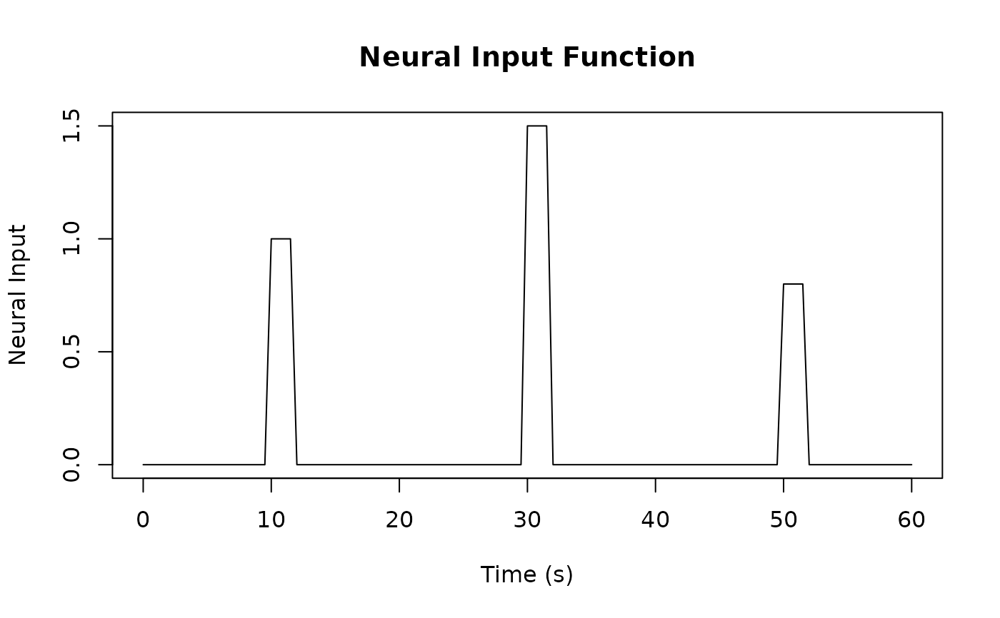

Generate Neural Input Function from Event Timing
Source:R/all_generic.R, R/neural_input_methods.R
neural_input.RdConverts event timing information into a neural input function representing the underlying neural activity before HRF convolution. This function is useful for:
Usage
neural_input(x, ...)
# S3 method for class 'Reg'
neural_input(x, start = 0, end = NULL, resolution = 0.33, ...)Value
A list containing:
- time
Numeric vector of time points
- neural_input
Numeric vector of input amplitudes at each time point
Details
- stimulus
Creating stimulus functions for fMRI analysis
- modeling
Modeling sustained vs. transient neural activity
- inputs
Generating inputs for HRF convolution
- visualization
Visualizing the temporal structure of experimental designs
Examples
# Create a regressor with multiple events
reg <- regressor(
onsets = c(10, 30, 50),
duration = c(2, 2, 2),
amplitude = c(1, 1.5, 0.8),
hrf = HRF_SPMG1
)
# Generate neural input function
input <- neural_input(reg, start = 0, end = 60, resolution = 0.5)
# Plot the neural input function
plot(input$time, input$neural_input, type = "l",
xlab = "Time (s)", ylab = "Neural Input",
main = "Neural Input Function")

# Create regressor with varying durations
reg_sustained <- regressor(
onsets = c(10, 30),
duration = c(5, 10), # sustained activity
amplitude = c(1, 1),
hrf = HRF_SPMG1
)
# Generate and compare neural inputs
input_sustained <- neural_input(
reg_sustained,
start = 0,
end = 60,
resolution = 0.5
)